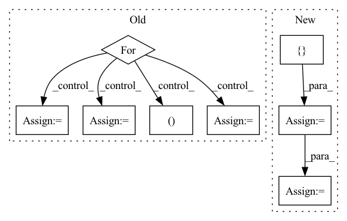

Pattern ID :2032

Before Change
xyz, point_features = torch.split(points, [3, 1], dim=-1)
keypoints_xyz, keypoints_features = self.sample_keypoints(xyz, point_features)
out = [(point_features, xyz)] + out
for i in range(len(self.cfg.strides)):
voxel_features_i, voxel_coords_i = out[i]
voxel_coords_i = voxel_coords_i.unsqueeze(0).contiguous()
voxel_features_i = voxel_features_i.unsqueeze(0).permute(0, 2, 1).contiguous()
keypoints_xyz = keypoints_xyz.unsqueeze(0).contiguous()
_, out = self.pnets[i](voxel_coords_i, voxel_features_i, keypoints_xyz)
return out
After Change
points, features, coordinates, voxel_population = self.voxelize(points)
cnn_out = self.cnn(features, coordinates, batch_size=1)
point_xyz, point_features = torch.split(points, [3, 1], dim=-1)
cnn_out = [(point_xyz, point_features)] + cnn_out
keypoint_xyz, keypoint_features = self.sample_keypoints(point_xyz, point_features)
keypoint_xyz = keypoint_xyz.unsqueeze(0).contiguous()
pnet_out = self.pnet_forward(cnn_out, keypoint_xyz)
return pnet_out
In pattern: SUPERPATTERN
Frequency: 3
Non-data size: 8
Instances
Fragment ID: 13818963
Project Name: jhultman/vision3d
Commit Name: 1d8a72fc38c04ef4a2ca6516f91c20cd89d4b46d
Time: 2020-02-03
Author: 27909223+jhultman@users.noreply.github.com
File Name: pvrcnn/main.py
M Class Name: PV_RCNN
N Class Name: PV_RCNN
M Method Name: forward(2)
N Method Name: forward(2)
M Parent Class: nn.Module
N Parent Class: nn.Module
M File Name: pvrcnn/main.py
N File Name: pvrcnn/main.py
M Start Line: 141
M End Line: 151
N Start Line: 161
N End Line: 167
'>
Before Change
xq = 0
diff = 0
codes = []
for vq in self.vqs:
_xq, _diff, _codes = vq(x - xq)
diff = diff + _diff
xq = xq + _xq
codes.append(_codes)
codes = torch.cat(codes, 1)
return xq, (x - xq).pow(2).mean(), codes
After Change
residual = x
all_losses = []
all_indices = []
n_q = n_q or len(self.layers)
for layer in self.layers[:n_q]:
quantized, indices, loss = layer(residual)
residual = residual - quantized
quantized_out = quantized_out + quantized
all_indices.append(indices)
all_losses.append(loss)
out_losses, out_indices = map(torch.stack, (all_losses, all_indices))
return quantized_out, sum(out_losses), out_indices.permute(1, 0, 2)
def encode(self,
'>
Fragment ID: 13818960
Project Name: caillonantoine/rave
Commit Name: b58cba5d330c227f2122bc07fcbf7ed068eb91be
Time: 2023-01-24
Author: caillon@ircam.fr
File Name: rave/quantization.py
M Class Name: ResidualVQ
N Class Name: ResidualVectorQuantization
M Method Name: forward(3)
N Method Name: forward(2)
M Parent Class: nn.Module
N Parent Class: nn.Module
M File Name: rave/quantization.py
N File Name: rave/quantization.py
M Start Line: 106
M End Line: 116
N Start Line: 289
N End Line: 307
'>
Before Change
xyz, point_features = torch.split(points, [3, 1], dim=-1)
keypoints_xyz, keypoints_features = self.sample_keypoints(xyz, point_features)
out = [(point_features, xyz)] + out
for i in range(len(self.cfg.strides)):
voxel_features_i, voxel_coords_i = out[i]
voxel_coords_i = voxel_coords_i.unsqueeze(0).contiguous()
voxel_features_i = voxel_features_i.unsqueeze(0).permute(0, 2, 1).contiguous()
keypoints_xyz = keypoints_xyz.unsqueeze(0).contiguous()
_, out = self.pnets[i](voxel_coords_i, voxel_features_i, keypoints_xyz)
return out
After Change
points, features, coordinates, voxel_population = self.voxelize(points)
cnn_out = self.cnn(features, coordinates, batch_size=1)
point_xyz, point_features = torch.split(points, [3, 1], dim=-1)
cnn_out = [(point_xyz, point_features)] + cnn_out
keypoint_xyz, keypoint_features = self.sample_keypoints(point_xyz, point_features)
keypoint_xyz = keypoint_xyz.unsqueeze(0).contiguous()
pnet_out = self.pnet_forward(cnn_out, keypoint_xyz)
return pnet_out
'>
Fragment ID: 13818966
Project Name: jhultman/vision3d
Commit Name: 1d8a72fc38c04ef4a2ca6516f91c20cd89d4b46d
Time: 2020-02-03
Author: 27909223+jhultman@users.noreply.github.com
File Name: pvrcnn/main.py
M Class Name: PV_RCNN
N Class Name: PV_RCNN
M Method Name: forward(2)
N Method Name: forward(2)
M Parent Class: nn.Module
N Parent Class: nn.Module
M File Name: pvrcnn/main.py
N File Name: pvrcnn/main.py
M Start Line: 141
M End Line: 151
N Start Line: 161
N End Line: 167